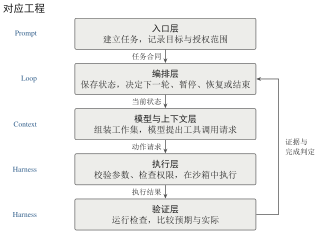

7.2 Coding Agent 的系统架构
用户提交一项任务后，系统怎样把模型的输出变成可执行、可审查、可恢复的开发过程？本节把第 7.1 节的运行循环落实为五层结构——入口、编排、模型与上下文、执行、验证，用一段伪代码说明它们怎样协作；再区分常被统称为“记忆”的三种东西；最后看 Claude Code、Codex 等主流产品分别把这些层放在哪里。结论是：模型只负责提出下一步，真正保证“做了什么、能不能做、做完没有”的，是围绕模型的状态、事件和完成条件。
7.2.1 五层结构：模型只负责提出下一步
一个可运行的 Coding Agent 至少有五层（图 7-4、表 7-2）。部署时它们可以在同一个进程、一个桌面应用或一组云端服务里，但每层的输入、输出和责任应当明确。

图 7-4 Coding Agent 的五层结构。左侧标出各层主要对应的工程技术；验证层的证据回到编排层，由编排层决定下一轮或结束
表 7-2 Coding Agent 五层结构的输入与输出
| 层次 | 输入 | 主要处理 | 输出 |
|---|---|---|---|
| 入口 | 用户请求、仓库路径、授权范围 | 建立任务，记录目标 | 任务编号与任务合同 |
| 编排 | 任务状态、上一轮结果 | 选择下一轮、暂停、恢复或结束 | 状态迁移与事件 |
| 模型与上下文 | 任务合同、相关文件、工具描述 | 判断下一步动作 | 工具调用请求或候选答案 |
| 执行 | 已通过检查的动作、凭据 | 访问文件、终端、测试和外部服务 | 退出码、数据、文件改动 |
| 验证 | 执行结果、验收条件 | 比较预期与实际，运行检查 | 测试报告、代码差异、完成判定 |
模型的“调用工具”通常只是一段结构化的请求，例如读文件的 read_file(path)、跑测试的 run_test(target)。真正检查参数、决定是否批准、执行命令并返回退出码的是运行系统。如果把“模型提出了动作”当成“动作已经完成”，就会出现最常见的交付错误：报告里写着“测试通过”，却找不到任何实际的测试记录。下面的伪代码把五层的协作写成一个循环（这是本书用于解释架构的示意，不是任何产品的源代码）：
state = load_or_create_task(user_request, workspace, policy) # 入口：建立任务与合同
while state.status == RUNNING: # 编排
context = select_context(state, token_budget) # 上下文
decision = model(context, tool_schemas) # 模型
if decision.kind == TOOL_CALL:
validate_arguments(decision) # 执行：校验
enforce_permission_and_sandbox(decision, state.policy) # 执行：授权
result = execute_tool(decision) # 执行
append_event(state, decision, result) # 记录事件
update_state_from_result(state, result)
else: # 模型认为已完成
if evidence_missing(state): # 验证：门禁
continue_or_escalate(state)
else:
state.status = COMPLETED真实系统还要处理超时、中断、重试和并发，但关键不在循环语法，而在三个可核查的对象：状态记录已经做了什么、还差什么；事件记录每个动作及其结果；完成条件决定何时可以结束。从工程技术的角度看这五层：Prompt Engineering 的产物（任务合同）在入口层建立并持久保存；Context Engineering 负责每轮的 select_context；Harness Engineering 负责执行层，以及验证层所用的检查和门禁；Loop Engineering 负责编排层的状态迁移和退出判断。这是“技术视角”与“层次视角”的对应，二者并不一一重合。
7.2.2 状态、上下文与记忆
模型每一轮只能根据当前输入作判断，不会“自然记住”此前的操作。因此运行系统至少要持久保存这些字段：任务编号、工作区与代码版本、目标和验收标准、当前计划、已完成的动作、工具结果的引用、待批准的动作、失败次数和最终产物。对话文本可以是记录的一种，但不能代替这些结构化字段：对话里只有模型“说要做什么”，没有退出码和批准记录；否则系统中断后，无法判断某条命令执行了没有，也就无法安全恢复。
上下文的组装是另一件事：一次模型调用不应塞进整个仓库和全部历史，而是从上述状态中挑出本轮需要的部分，详见第 7.4 节。
常被统称为“记忆”的东西，至少有三种，更新频率和权威性都不同：
会话状态：当前任务的进度和证据，随每轮更新，任务结束即可归档；
项目知识：仓库约定和稳定事实，写在受版本控制的文件里，例如
AGENTS.md（多个 Agent 产品共同识别的项目说明文件，现由 Linux 基金会旗下的 Agentic AI Foundation 托管其约定）和CLAUDE.md（Claude Code 读取的项目说明文件）；跨任务经验：用户偏好、历史结论、可复用的操作方法，需要注明来源、适用范围和失效条件。
不同产品的落地方式不同，但思路一致：先在外部持久化，再有选择地注入上下文。记忆的分类见第 8.1.4 小节，存取方式和代表性系统见第 8.2 节。
7.2.3 主流产品把各层放在哪里
现有产品的界面和定位各不相同，但都要处理任务状态、上下文、工具调用、权限和反馈这几件事。表 7-3 按本章的分层，列出几种代表性系统的做法（信息截至 2026 年 11 月，来自各产品官方文档和发布说明[2],[3],[5],[6],[7],[8]）。表中产品只是工程机制的实例，版本迭代很快，做实验时应写明所用版本。
表 7-3 代表性 Coding Agent 的实现选择（截至 2026 年 11 月）
| 产品（机构） | 形态 | 上下文与状态 | 权限、隔离与反馈 |
|---|---|---|---|
| Claude Code（Anthropic） | 终端、IDE、桌面与网页 | 官方把循环概括为“获取上下文—采取行动—验证结果”；CLAUDE.md 与自动记忆；子 Agent 在独立窗口中读取、只回传结论；Skill 按需加载 |
allow/ask/deny 权限规则、操作系统沙箱；Hook 在工具调用前后和结束时运行检查 |
| Codex（OpenAI） | 命令行、IDE 扩展、桌面应用、云端 | AGENTS.md；线程（thread，一次持久会话）与轮次（turn，其中一次“输入—执行—回复”）的生命周期接口；Goals 功能为长任务保存持久目标 |
只读、工作区可写、完全访问三档沙箱，配合审批策略 |
| Cursor（Anysphere） | 以 AI 为中心的编辑器 | 3.0 版（2026 年 4 月）起可在本地、独立工作树和云端并行运行多个 Agent | 在编辑器内展示差异，由用户审阅 |
| Qoder（阿里巴巴） | 桌面应用、命令行、IDE 插件 | 2025 年 8 月以 AI IDE 发布，2026 年 5 月的 1.0 版改为可独立执行整项开发任务的桌面应用 | 按工作区和分支组织任务 |
| Muse Code（Meta） | 终端与 CI | 2026 年 8 月随 Muse Spark 1.2 模型发布；父 Agent 可并行调度子 Agent | 工作区信任、审批、操作系统级沙箱 |
| Kimi Code（月之暗面） | 命令行等 | 常与 Kimi K3 模型（2026 年 7 月发布，100 万 token 上下文）搭配 | 由宿主实施权限与验证 |
表中的几个机制在后文详细展开：allow/ask/deny（自动允许 / 先问用户 / 直接拒绝）、沙箱和 Hook（在生命周期事件上自动运行的检查程序）见第 7.5 节，Skill（按需加载的操作说明包）和 MCP 见第 7.6 节，Goals 见第 7.3.3 小节。
比较这些系统时，要分清模型和完整的 Agent 系统。Kimi K3、Muse Spark 是模型，它们生成计划和工具调用请求；连接真实工具、保存状态、实施权限、验证结果的，是 Kimi Code、Muse Code 这样的宿主系统。同一个模型配不同的 Harness，在编程基准上的得分可能有明显差异，因此模型厂商公布编程基准成绩时通常要注明所用的 Harness；评价“模型能力”和评价“Agent 系统”时必须分别控制变量：固定任务和仓库，记录模型版本、上下文策略、可用工具、权限模式、工作区隔离、测试预算和人工介入次数。只比较最终代码或宣传中的“多 Agent”数量，说明不了差异来自哪一层。
还有几类相邻的系统，各自突出了架构的某一面[9],[10],[11]：
长期运行：开源的 OpenClaw（2025 年 11 月首发，曾名 Clawdbot、Moltbot）以一个长驻的网关（Gateway）进程连接多个聊天渠道，把消息路由给 Agent，并带有持久记忆和定时触发。任务从任何渠道进入后，仍要关联到具体工作区和权限配置，不能因为来自已连接的渠道就默认获得仓库写权限。
经验积累：Nous Research 开源的 Hermes Agent 区分“已知什么”（事实性记忆）和“遇到某类任务怎样做”（技能），能从执行经验中生成并修订技能。技能文件变了，不等于系统变好了；要判断是否真有改进，见第 7.8 节。
办公与个人事务：腾讯 WorkBuddy（2026 年 3 月上线，据 IT之家转述腾讯云官方公众号消息[26]）处理授权目录中的办公文件，Meta 的个人 Agent Muse（2026 年 9 月发布，与上文的 Muse Code 同属 Meta 的 Muse 品牌，但是不同的产品）在独立虚拟机里运行并对敏感动作要求审批。与代码仓库不同，发邮件、下单这类业务动作有外部副作用，无法用代码差异和版本控制撤销，风险边界也就不同。
7.2.4 一套最小技术栈
把上述机制落到一个小型 TypeScript 仓库里，每一层需要的最小组件和必须留下的产物见表 7-4。这是教学用的参考架构，不是某个已实现的项目。
表 7-4 最小技术栈：每层的组件和必须留下的可检查产物
| 层次 | 最小组件 | 必须留下的产物 |
|---|---|---|
| 任务合同 | JSON 格式的任务定义：目标、范围、完成条件、权限策略 | 任务版本与验收条件 |
| 工作区 | Git 仓库、固定版本的依赖锁文件、独立分支或工作树 | 起始提交、最终代码差异 |
| 状态存储 | SQLite 或结构化的 JSON 事件日志 | 任务编号、状态迁移、工具调用与结果 |
| 上下文 | 仓库规则、检索器、日志摘要、来源标记 | 每轮选入的文件路径和版本 |
| 模型适配 | 可替换的模型 API、结构化工具调用 | 模型版本、参数与请求编号 |
| 工具执行 | 读文件、编辑、终端、测试；可选的 MCP 适配器 | 参数、退出码、输出与错误类型 |
| 安全控制 | allow/ask/deny 规则、沙箱、凭据隔离 | 批准记录与越界拦截记录 |
| 验证与恢复 | 单元测试、类型检查、构建、检查点与重试上限 | 测试报告、完成判定与恢复位置 |
用这张表可以检查任何扩展：把检索和实现拆给两个 Agent，就要补上子任务的输入版本和验收方式；接入真实邮箱，就要先补工具契约、身份和审批；让 Agent 积累经验，就要给技能加上版本号和对照评估。每加一种能力，都能在表中找到需要补齐的产物。
本节要点
五层结构：入口建任务，编排管状态，模型与上下文提出动作，执行层受控地完成动作，验证层给出证据。
状态、事件、完成条件是三个可核查对象；会话状态、项目知识、跨任务经验是三种不同的“记忆”。
比较产品时分清模型与宿主系统，固定任务，逐项记录各层配置。